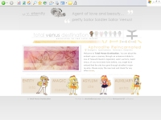

Asylum » Memoir
Here's the place where you'll find all of Total Venus Destination's previous layouts. Please do not use these layouts for your own websites. Thank you.
Start: May 29th, 2001
End: July 1st, 2001
Theme: Summer Solstice
Full View
This was my summer layout...very simple, nice, and clean. It worked with just about every popular browser at the time, Netscape, IE, etc. Just not IE 5.0. Although this layout was great for the navigation and the picture was fitting for the summer, it didn't last long. It was supposed to be replaced by a new layout in mid-June, as I had planned, but I had computer issues, and it ended up staying until July.
Start: Dec. 31st, 2000
End: May 1st, 2001
Theme: Majestic Princess
Full View
This layout, unlike its predecessor, was way too big for 800x600 resolutions and more compatible with 1024 x 768 resolutions. It was neither Netscape nor AOL friendly, or even IE friendly depending on which version you had. On IE 5.0, you couldn't see the enter sign on the first page, and once you enter, the words were overlapped, etc. But I really liked this pic of venus, so I had to make a layout with it. I saved the screenshot in MS Paint, which accounts for the disfiguration/discoloration of words and colors.
Start: Dec. 9th, 2000
End: Dec. 30th, 2000
Theme: Spiritual Xmas
Full View
I have to say I liked this layout featuring Asuka from NGE, especially since it was my first "good" layout. Back then, this wasn't a Minako shrine, so I would randomly choose characters to put on my layouts. I loved this picture of Asuka. This is the year 2000 Christmas version...quite simple and very much like its predecessor. It wasn't up for very long so I don't know how it worked on Netscape or AOL. Again, the colors of the words are discolored due to saving in MS Paint.
Start: Dec. 31st, 2000
End: Jan. 13th, 2003
Theme: A Taste of Desolation
Full View
I don't remember this layout being up for 2 years, but I suppose it did. I absolutely adored this green layout with mouseovers. Separate pages even had their own matching layouts. I didn't spend much time on this one, but it turned out rather well. I used one of my favorite picture of Minako, a doujinshi of her looking depressed, which fits the theme. This layout was featured when I revamped most of the site in 2001.
Start: Jan. 13th, 2003
End: Jul. 6th, 2006
Theme: SINFULLY BEAUTIFUL
Full View
I thought this layout was very beautiful when it first debuted. But as time went on, I felt that it wasn't sophisticated enough. There were multiple layouts for the different sections, but I felt that they all represented an amateur's work. Nevertheless, this layout was up for quite a bit of time while I went through most of university. TVD was put on the backburner during these years so I could focus on my studies and other websites.

Start: Jul. 6th, 2006
End: still ongoing
Theme: TVD - a tribute
Full View
My style of design has changed slightly over the years, and I wanted TVD to take on a more matured, structured look. Thus, I opted for this layout to be clean, crisp and professional while still retaining the fun factor (front image changes upon each page refresh). Best viewed in 1024x768 resolutions and fully functional in both Mozilla Firefox and IE 6.0, I fully intend for this to be the last layout TVD has. But who knows, I may come back and change it one day. Time will tell.